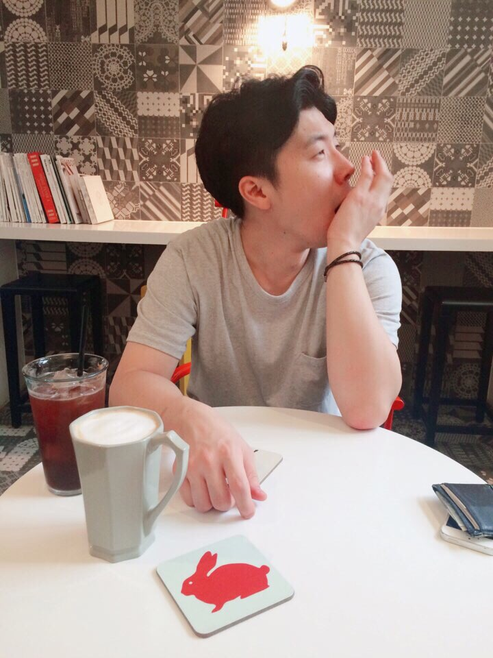
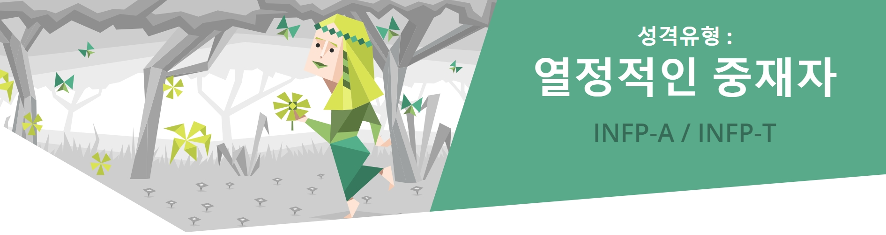

안녕하세요.
위코드 8기 김영목입니다.
광고를 전공했던 파워 문과인에서
이제 코딩을 배워보려고 합니다.
This is me
부산에서 태어나서 20년을 살다 현재는 서울에서 살고 있습니다.
광고 조금 하고 마케팅 조금 하다 이제 코딩을 배워보려고 합니다.
자기소개서를 그렇게 많이 썼는데, 여전히 자기소개가 어렵습니다.

김영목 KIM YOUNG MOK 金榮睦
1989년생 32살 32-years-old
#영화#드라마#책#음악
#넷플릭스#게임#전시
#유럽축구#한국야구#NBA
#탄수화물#야식#인스턴트
#커피#커피#커피#맥주#맥주
객관적으로 보면 저는 이런 사람이라고 합니다.

INFP 사람들은
중재자형 사람은 최악의 상황이나 악한 사람에게서도 좋은 면만을 바라보며 긍정적이고 더 나은 상황을 만들고자 노력하는 진정한 이상주의자입니다. 간혹 침착하고 내성적이며 심지어는 수줍음이 많은 사람처럼 비추어지기도 하지만, 이들 안에는 불만 지피면 활활 타오를 수 있는 열정의 불꽃이 숨어있습니다. 인구의 대략 4%를 차지하는 이들은 간혹 사람들의 오해를 사기도 하지만, 일단 마음이 맞는 사람을 만나면 이들 안에 내재한 충만한 즐거움과 넘치는 영감을 경험할 수 있을 것입니다. 이들은 논리나 단순한 흥미로움, 혹은 인생의 실용적인 부분이 아닌 그들 나름의 원리원칙에 근거하여 사고하고 행동합니다. 더욱이 성취에 따르는 보상이나 그렇지 못할 경우에 생길 수 있는 불이익 여부에 상관없이 순수한 의도로 인생의 아름다움이나 명예 그리고 도덕적 양심과 미덕을 좇으며 나름의 인생을 설계해 나갑니다. 그리고 그러한 본인들의 생각과 행동에 자부심을 느끼기도 합니다.
나의 MBTI 알아보기
잔다르크형,이상주의자,
현실감각없음
게으름뱅이vs완벽주의
정말 좋아하는 걸 하나를 꼽는 것은 어렵지만...
아주, 매우, 상당히, 대중적인 취향을 가지고 있습니다.
자기소개를 마치겠습니다.
표정이 안 좋을 땐 높은 확률로 체내에 카페인이나 당이 부족한 상태입니다.
사양하지 말고 인사해주세요! 잘 부탁드립니다.